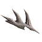
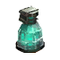
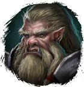

Шип Драконьего Слуги
Предметы / С врагов
Открыть в интерактивной вики →
| Вес | 3 |
|---|---|
| Цена | 450 |
Описание
Компонент, используемый для изготовления

Большая Фляга Ловкости. Её создает
Первосвященник в Горах Колдов.| Ингредиент для изготовления Большой фляги ловкости. Изготавливает Первый Жрец в Горах Колдов. |
Дроп
Применение
|
Как добыть
| Получаем за победу над: |